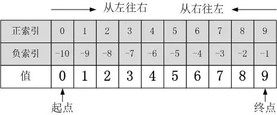

在利用Python解决各种实际问题的过程中，经常会遇到从某个对象中抽取部分值的情况，切片操作正是专门用于完成这一操作的有力武器。理论上而言，只要条件表达式得当，可以通过单次或多次切片操作实现任意切取目标值。切片操作的基本语法比较简单，但如果不彻底搞清楚内在逻辑，也极容易产生错误，而且这种错误有时隐蔽得比较深，难以察觉。本文通过详细例子总结归纳了切片操作的各种情况。若有错误和不足之处请大牛指正！
Python可切片对象的索引方式包括：正索引和负索引两部分。
如下图所示，以a = [0, 1, 2, 3, 4, 5, 6, 7, 8, 9]为例：

一个完整的切片表达式包含两个“:”，用于分隔三个参数（start_index、end_index、step），当只有一个“:”时，默认第三个参数step=1。
切片操作基本表达式：object[start_index : end_index : step]step：正负数均可，其绝对值大小决定了切取数据时的“步长”，而正负号决定了“切取方向”，正表示“从左往右”取值，负表示“从右往左”取值。当step省略时，默认为1，即从左往右以增量1取值。“切取方向非常重要！”“切取方向非常重要！”“切取方向非常重要！”，重要的事情说三遍！
start_index：表示起始索引（包含该索引本身）；该参数省略时，表示从对象“端点”开始取值，至于是从“起点”还是从“终点”开始，则由step参数的正负决定，step为正从“起点”开始，为负从“终点”开始。
end_index：表示终止索引（不包含该索引本身）；该参数省略时，表示一直取到数据”端点“，至于是到”起点“还是到”终点“，同样由step参数的正负决定，step为正时直到”终点“，为负时直到”起点“。
以下示例均以列表a = [0, 1, 2, 3, 4, 5, 6, 7, 8, 9]为例：
>>> a = [0, 1, 2, 3, 4, 5, 6, 7, 8, 9]
>>> a[0]
0
>>> a[-4]
6>>> a[:] # 从左往右
[0, 1, 2, 3, 4, 5, 6, 7, 8, 9]
>>> a[::] # 从左往右
[0, 1, 2, 3, 4, 5, 6, 7, 8, 9]
>>> a[::-1] # 从右往左
[9, 8, 7, 6, 5, 4, 3, 2, 1, 0]>>> a[1:6] # step=1，从左往右取值，start_index=1到end_index=6同样表示从左往右取值。
[1, 2, 3, 4, 5]
>>>a[1:6:-1] # step=-1，决定了从右往左取值，而start_index=1到end_index=6决定了从左往右取值，两者矛盾。
>>> [] # 输出为空列表，说明没取到数据。
>>>a[6:1] # step=1，决定了从左往右取值，而start_index=6到end_index=1决定了从右往左取值，两者矛盾。
>>> [] # 同样输出为空列表。
>>>a[:6] # step=1，从左往右取值，从“起点”开始一直取到end_index=6。
>>> [0, 1, 2, 3, 4, 5]
>>>a[:6:-1] # step=-1，从右往左取值，从“终点”开始一直取到end_index=6。
>>> [9, 8, 7]
>>>a[6:] # step=1，从左往右取值，从start_index=6开始，一直取到“终点”。
>>> [6, 7, 8, 9]
>>>a[6::-1] # step=-1，从右往左取值，从start_index=6开始，一直取到“起点”。
>>> [6, 5, 4, 3, 2, 1, 0]>>>a[-1:-6] # step=1，从左往右取值，而start_index=-1到end_index=-6决定了从右往左取值，两者矛盾。
>>> []
>>>a[-1:-6:-1] # step=-1，从右往左取值，start_index=-1到end_index=-6同样是从右往左取值。
>>> [9, 8, 7, 6, 5]
>>>a[-6:-1] # step=1，从左往右取值，而start_index=-6到end_index=-1同样是从左往右取值。
>>> [4, 5, 6, 7, 8]
>>>a[:-6] # step=1，从左往右取值，从“起点”开始一直取到end_index=-6。
>>> [0, 1, 2, 3]
>>>a[:-6:-1] # step=-1，从右往左取值，从“终点”开始一直取到end_index=-6。
>>> [9, 8, 7, 6, 5]
>>>a[-6:] # step=1，从左往右取值，从start_index=-6开始，一直取到“终点”。
>>> [4, 5, 6, 7, 8, 9]
>>>a[-6::-1] # step=-1，从右往左取值，从start_index=-6开始，一直取到“起点”。
>>> [4, 3, 2, 1, 0]>>>a[1:-6] # start_index=1在end_index=-6的左边，因此从左往右取值，而step=1同样决定了从左往右取值。
>>> [1, 2, 3]
>>>a[1:-6:-1] # start_index=1在end_index=-6的左边，因此从左往右取值，但step=-则决定了从右往左取值，两者矛盾。
>>> []
>>>a[-1:6] # start_index=-1在end_index=6的右边，因此从右往左取值，但step=1则决定了从左往右取值，两者矛盾。
>>> []
>>>a[-1:6:-1] # start_index=-1在end_index=6的右边，因此从右往左取值，而step=-1同样决定了从右往左取值。
>>> [9, 8, 7]>>>a[:8][2:5][-1:]
>>> [4]相当于：
a[:8]=[0, 1, 2, 3, 4, 5, 6, 7]
a[:8][2:5]= [2, 3, 4]
a[:8][2:5][-1:] = 4
理论上可无限次连续切片操作，只要上一次返回的依然是非空可切片对象。
>>>a[2+1:3*2:7%3] # 即：a[2+1:3*2:7%3] = a[3:6:1]
>>> [3, 4, 5]前面的切片操作说明都以list为例进行说明，但实际上可进行的切片操作的数据类型还有很多，包括元组、字符串等等。
>>> (0, 1, 2, 3, 4, 5)[:3] # 元组的切片操作
>>> (0, 1, 2)
>>>'ABCDEFG'[::2] # 字符串的切片操作
>>>'ACEG'
>>>for i in range(1,100)[2::3][-10:]: # 利用range函数生成1-99的整数，然后取3的倍数，再取最后十个。
print(i, end=' ')
>>> 72 75 78 81 84 87 90 93 96 99以列表：a = [0, 1, 2, 3, 4, 5, 6, 7, 8, 9]为说明对象
>>>b = a[::2]
[0, 2, 4, 6, 8]>>>b = a[1::2]
[1, 3, 5, 7, 9]>>>b = a[:] # ★★★★★
>>>print(b) # [0, 1, 2, 3, 4, 5, 6, 7, 8, 9]
>>>print(id(a)) # 41946376
>>>print(id(b)) # 41921864
>>>b = a.copy()
>>>print(b) # [0, 1, 2, 3, 4, 5, 6, 7, 8, 9]
>>>print(id(a)) # 39783752
>>>print(id(b)) # 39759176需要注意的是：[:]和.copy()都属于“浅拷贝”，只拷贝最外层元素，内层嵌套元素则通过引用，而不是独立分配内存。
>>>a = [1,2,['A','B']]
>>>print('a={}'.format(a))
a=[1, 2, ['A', 'B']] # 原始a
>>>b = a[:]
>>>b[0] = 9 # 修改b的最外层元素，将1变成9
>>>b[2][0] = 'D' # 修改b的内嵌层元素
>>>print('a={}'.format(a)) # b修改内部元素A为D后，a中的A也变成了D，说明共享内部嵌套元素，但外部元素1没变。
a=[1, 2, ['D', 'B']]
>>>print('b={}'.format(b)) # 修改后的b
b=[9, 2, ['D', 'B']]
>>>print('id(a)={}'.format(id(a)))
id(a)=38669128
>>>print('id(b)={}'.format(id(b)))
id(b)=38669192>>>a[3] = ['A','B']
[0, 1, 2, ['A', 'B'], 4, 5, 6, 7, 8, 9]>>>a[3:3] = ['A','B','C']
[0, 1, 2, 'A', 'B', 'C', 3, 4, 5, 6, 7, 8, 9]
>>>a[0:0] = ['A','B']
['A', 'B', 0, 1, 2, 3, 4, 5, 6, 7, 8, 9]>>>a[3:6] = ['A','B']
[0, 1, 2, 'A', 'B', 6, 7, 8, 9]（一）start_index、end_index、step可同为正、同为负，也可正负混合使用。但必须遵循一个原则，即两者的取值顺序必须是相同的，否则无法正确切取到数据：当start_index的位置在end_index的左边时，表示从左往右取值，此时step必须是正数（同样表示从左往右）；当start_index的位置在end_index的右边时，表示从右往左取值，此时step必须是负数（同样表示从右往左）。对于特殊情况，当start_index或end_index省略时，起始索引和终止索引由step的正负来决定，不会存在取值方向出现矛盾的情况，但正和负取到的结果是完全不同的，因为一个向左一个向右。
（二）在利用切片时，step的正负是必须要考虑的，尤其是当step省略时。比如a[-1:]，很容易就误认为是从“终点”开始一直取到“起点”，即a[-1:]= [0, 1, 2, 3, 4, 5, 6, 7, 8, 9]，但实际上a[-1:]=a[-1]=9，原因在于step=1表示从左往右取值，而起始索引start_index=-1本身就是对象的最右边的元素了，再往右已经没数据了，因此只有a[-1]一个元素。
原文经过些许修改
原文作者：马尔代夫Maldives
原文链接：https://www.jianshu.com/p/15715d6f4dad